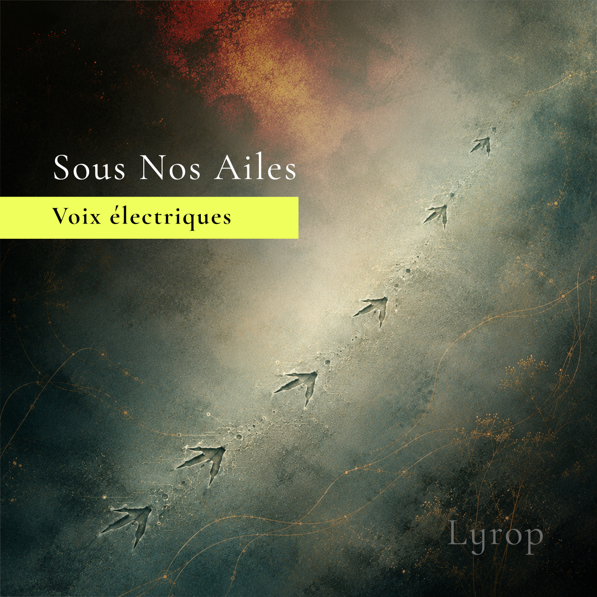

New release · 9 October 2026
Sous Nos Ailes
Above the noise, into the blue.
She moves through a garden of silver wires, whispering trees and electric creatures. Her wings held tightly against her. But finally, she unfolds her wings of metal.
Not to escape the world, but to rise above its noise and see it differently. What begins as her solitary flight becomes a shared liberation: she takes someone with her. Into the blue, beneath their wings, free at last to be who they are.

Out 9 OctoberFirst listen
41-second preview
Behind the music
An imagined safe place.
“Sous Nos Ailes” began years ago as the soundtrack to an imaginary science-fiction world.
It was written for someone close to me who was still a young child—someone I feared might be too vulnerable for the real world. So I imagined an alternative for him: a place where the organic and the electric could live side by side, and where tenderness could be a form of strength.
Inspired by Vangelis and cinematic electronic music, the track holds both protection and unease: warmth shaped from the knowledge that the world outside cannot always be made safe.
Discography
Albums & releases
Electronic music moving between neotango, ambient sound, orchestral colour and imagined worlds.
About Lyrop
Music between worlds.
Lyrop is the musical project of Rotterdam-based producer Maarten Lierop, a keyboardist, accordionist and bandoneon player with a deep affection for old-school analogue synthesizers. His music rarely settles within a single genre, moving instead through the spaces between neotango, ambient, electronica and cinematic sound.
info@lyropmusic.comFind Lyrop